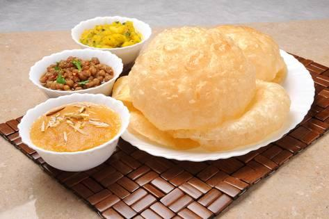

Halwa Puri Aur Choly Ka Salan

Recipe by chef Mah Rukh
Ingredients
Puri
- Flour 2 cups(makes about 20)
- Oil 2 tsp
- Oil for deep frying
Aalo Ki Bhujia
- Medium size potato 1
- salt to taste
- Chilli Powder1/2 tsp
- Haldi Powder 1/4 tsp
- Kalonji seeds 1/2 tsp
Choly
- Presoaked whole channa 1/2 tsp
- salt to taste
- Zeera powder 1/2 tsp
- Crushed Whole dried red chillies 1/2 tsp
- Haldi powder 1/4 tsp
Halwa
- Suji (semolina) 1 cup
- Oil 2 cup
- Water 1/2 cup
- SEEds of small illaichi 3
- Yellow food color (optional)
Instructions
Poori
- Make the dough with flour and 2 tsp oil and water as needed
- Make into small puries (pancake like) as flat as you can and deep fry in hot oil
Aalo ki Bhujia
- Cut the potatoes into small cubes.
- Add spices and 1 cup of water and leave on low heat.
- When soft,mash lightly.
Choly
- Boil the channa ith salt until soft.
- In a pot heat 1tbs of oil.
- Add spices and softend channa and 1/4 cup of water.
- Mix and mash slightly.
- Cook till bubbles appear then remove from heat.
Halwa
- Put the suji and oil in a pot along with illaichi seeds and fry until slightly brown on very low heat.
- Menwhile combine sugar and water to make the syrup
- Add this to the suji taken care not to burn yourselfand cook on low heat to desired consistency.
- If you want to color the halwa add the color to the syrup before pouring it into the suji.